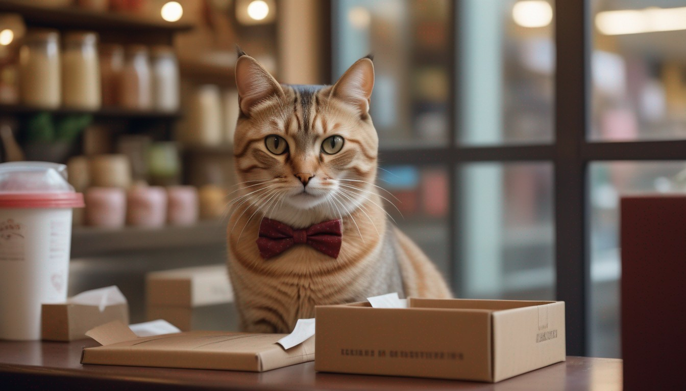

Michi-anfitrion Kuky
Es un gatito un travieso, sociable, sin problemas podrás jugar con él, su juego favorito es que le lancen la pelota. Le encantan las caricias y los treats. Sus favoritos son los churus, latitas de atún, sobrecitos entre otros.
¡Cuidado con tu comida! le encanta pasar sus bigotes e intentar robarte algún dulce de la mesa.

Michi-anfitrion Rumi
Curiosa y regalona, gusta de estar en el regazo del comensal, le encantan los cariños en la cabeza y unas palmaditas suaves en el lomo. Al igual que Kuky, le gusta recibir treats de los visitantes y sus preferidos son los churus. Normalmente de caracter tranquilo, pero cuando tocan su pancita, muestra lo fiera que puede ser.

Michi-anfitrion Oreo
El mas flojo del grupo, siempre durmiendo encima de su alfombra favorita, pero cuando escucha los cascabeles de su juguete favorito se despierta inmediatamente y va corriendo a donde se encuentre.
Le encantan las caricias y es el único que va a dejar que le acaricies su pancita.

Michi-anfitrion Mustafá
Mustafá es un gato que siempre va elegante con su corbatín ya que es considerado el gerente del café y observa desde su lugar como se desempeñan los demás Michi-anfitriones.
Gusta de tomar largas sisetas en lo alto, pero el sonido de un sobrecito de treat lo despierta de inmediato y baja a que le den un poco.